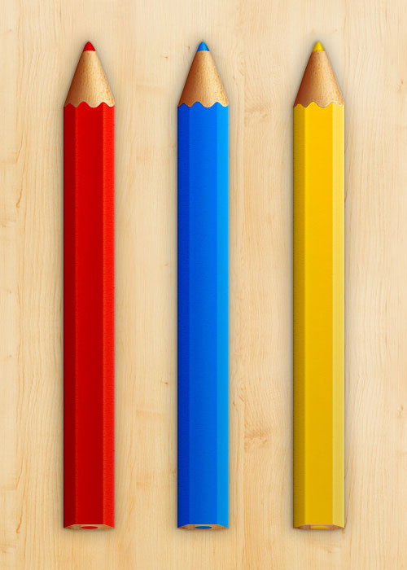

Colored Pencil Illustrations - Free PSD download
What originally started as an idea of an app icon, I thought these detailed colored pencil illustrations would make a great free PSD download! At the moment I'm working on improving my design skills in skeuomorphism, so this was an exercise in that and involved a lot of experimentation and trial and error. In the Photoshop file there is a blue pencil, yellow pencil and red pencil. I'm happy with the result and hope that you will be too! Below is a full sized preview of the photoshop file:

When I started creating these colored pencils I began with a vector version of the illustration that had each section of the pencil as a separate vector object. After nearly finishing the pencils I decided there had to be a better way than with all these separate parts, which was proving to be a bit of a headache. So I scrapped everything and started all over, 8-10 hours wasted, haha. No, I wouldn't say they were wasted, but just time learning :) So the second time around I made the pencil body one piece and created the 3 different sides with just one detailed gradient. This approach was a big improvement because it was simpler and the photoshop file was more organized and because I could adjust colors more quickly.
Thoughts for next time - It would be nice if next time I could make the pencil sides out of a black and white gradient overlaid on a solid color. This would make adjusting the color of the pencil much easier - say if I wanted a pink or an orange, but I'm unsure if this would produce a result of sufficient quality for all colors. Each color still needed it's own tweaks of these three - for example the blue colored pencil needed the opacity turned down on body texture layer.
If you've enjoyed this file, be sure to follow me on Twitter or dribbble to keep up with all the latest downloads.